Support for IronPython 1.1 is now available for SharpDevelop 2.2.1.2648. The IronPython addin is an early alpha release and is not an official part of SharpDevelop 2.2.1 so it is available as a separate download at the end of this post.
The addin will not work with SharpDevelop 3.0 nor IronPython 2.0.
Please note that code completion, the forms designer and code conversion all need a lot more work.
Open up the new project dialog by selecting New then Solution from the File menu. Selecting the Python category will show two project templates. One will create a Windows console application and the other will create a Windows Forms application.
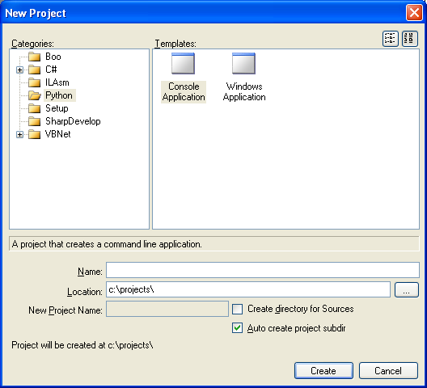
Once you have created a new project you will then need to add a reference to the IronPython assembly. Open the Projects window by selecting Projects from the View menu. In the Projects window, right click the project and select Add Reference. Select the .NET Assembly Browser tab and click the Browse button. Then browse to IronPython.dll. The addin includes this file so can either extract it from there or if you installed it from the sdaddin file then you should be able to find the IronPython.dll in the folder:
C:\Documents and Settings\[YourUserName]\Application Data\ICSharpCode\SharpDevelop2.1\AddIns\ICSharpCode.PythonBinding
To build the application select Build Solution from the Build menu.
The built executables cannot be run with the debugger so instead select Run without debugger from the Debug menu. If you are running a windows app and nothing seems to happen then open a command line window and run it from there. This way you should see any errors reported from the IronPython runtime.
There are a few file templates which can be added to the project as shown below.
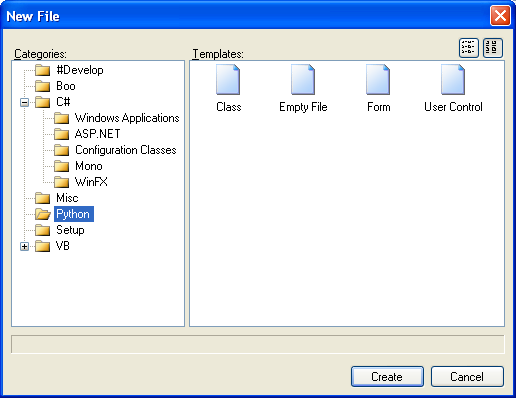
The Windows Forms designer is still in its early stages so please be warned that it may break the form's code or worse. Most of the Windows Forms controls work with the designer but things like adding columns to a list view will generate code that does not compile.
The designer can be opened in the usual way by opening the form in the text editor and selecting the Design tab at the bottom of the text editor.
Once open in the designer you can add controls to the form in the usual way from the Tools window. In the screenshot below a label, text box and a button have been added.

Click the Source tab to view the generated code in the InitializeComponents method.

Code folding allows you to collapse regions of a class.
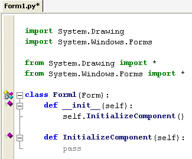
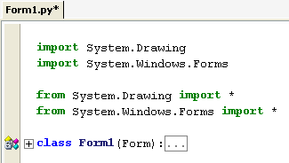
Code completion is very limited currently. If you type a space after an import statement then you will get a list of namespaces available.
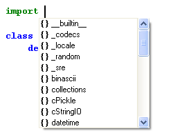
Code completion for classes is one area which has the most limited support. If you open Program.py you can get code completion for static classes such as System.Console but it does not work everywhere.
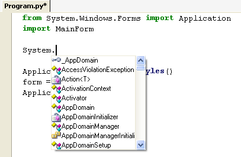
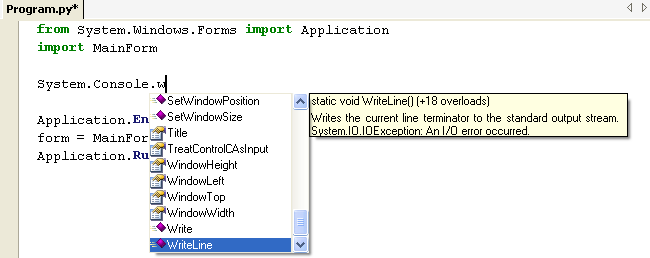
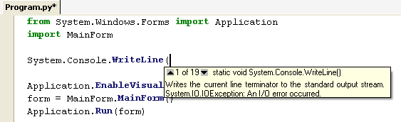
To convert VB.NET or C# to Python open the file you want to convert and then select Convert code to Python from the Tools menu.
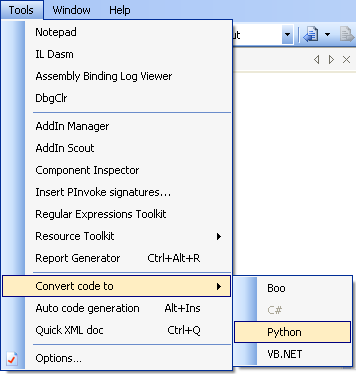
The code conversion is limited to classes so it will not convert an arbitary piece of code that is not inside a class. A C# class being converted to Python is shown below.
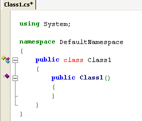
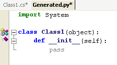
The code conversion is still at an early stage of development so it will fail on complicated classes.
Classes in the open solution will be displayed in the Class browser (Select Classes from the View menu).
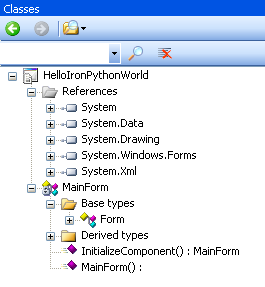
From there you can double click a class or method and the text editor will display the corresponding code.
The addin has support for standalone Python files. If you open a file with a .py file extension then a Python menu will appear.
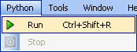
From this menu you can run ipy.exe and have it execute the file. Any output from the Python script will be shown in the Output window.
By default the ipy.exe run is the one that ships with the addin. You can choose another IronPython console by select Options from the Tools menu. Selecting the Python option allows you to choose another IronPython console.

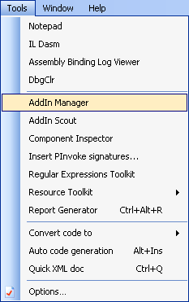
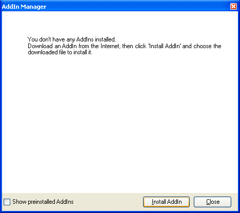
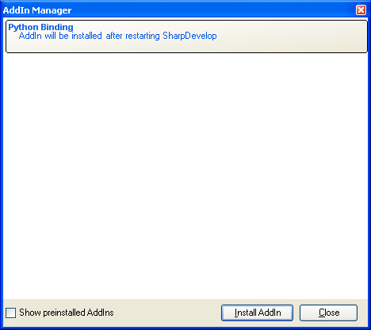
Since SharpDevelop 2.2.1.2648 is the last release in the 2.x branch the next release of the IronPython addin will be for SharpDevelop 3.0 and it will support IronPython 2.0.
Some of the Python tutorials and links used whilst creating the IronPython addin.